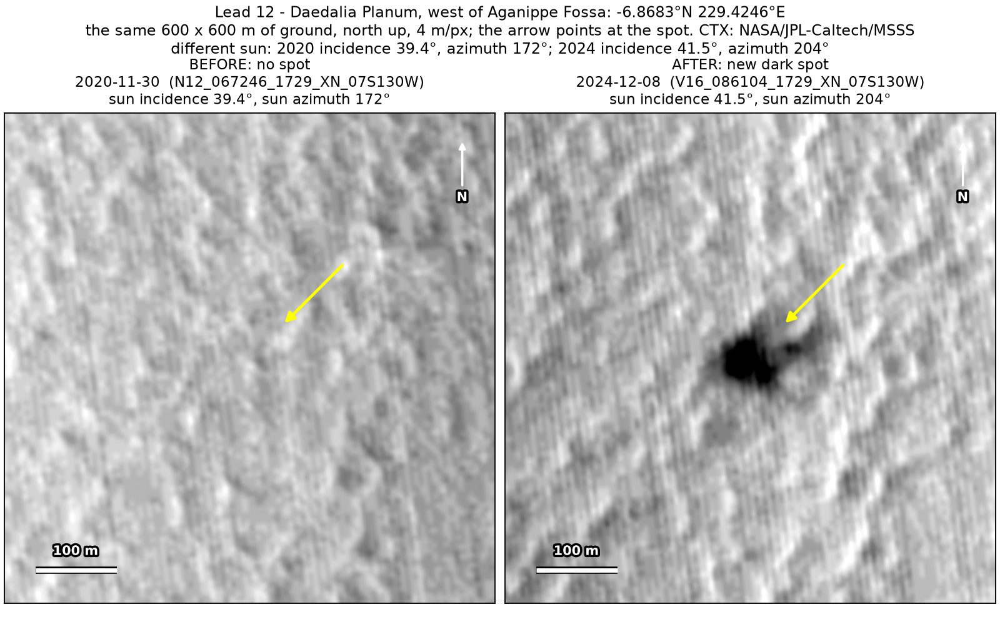
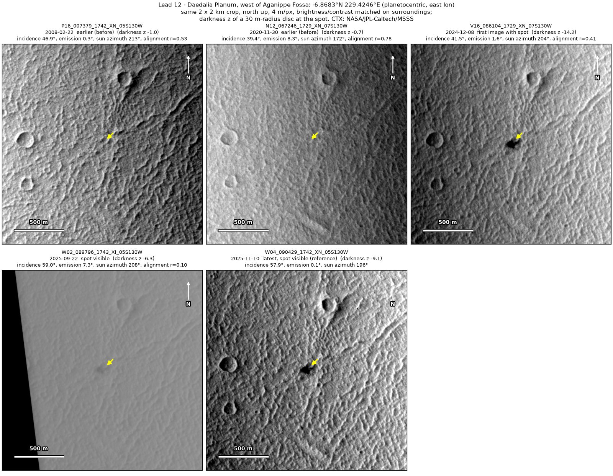
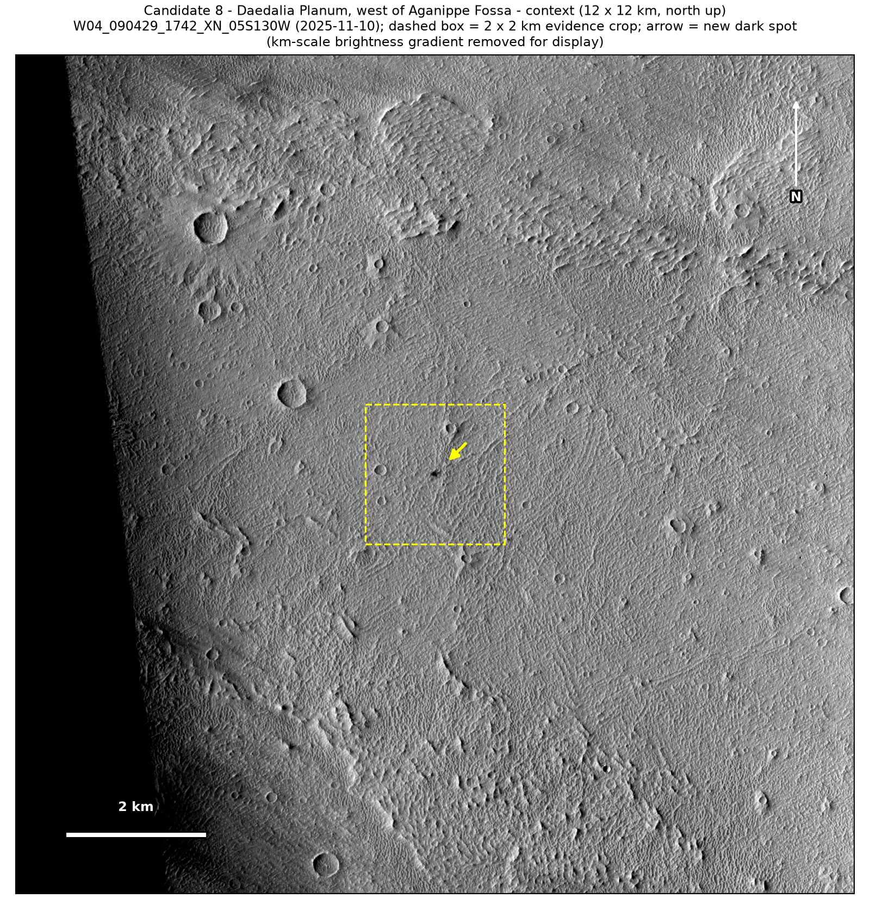

Professor of Mathematics
Paata Ivanisvili
Department of Mathematics, University of California, Irvine

← Possible new impact sites on Mars
Candidate 12: Lava plains of Daedalia Planum, west of Aganippe Fossa
Strong · roughly 80%

What changed. A very dark, lobed spot 50 to 60 m across appeared on the lava plains of Daedalia Planum, west of Aganippe Fossa, between November 2020 and December 2024. It keeps the same shape in two CTX images 11 months apart.
Why it may be a new impact. Two earlier images, from February 2008 and November 2020, show nothing there. The spot keeps its shape in December 2024 and November 2025 with the sun at quite different heights, so it is not a shadow, and a very dark spot appearing on plains fits the blast zone of a small new crater.
- Location
- 6.868° S, 229.425° E (130.575° W)
- Absent
- 22 February 2008 and 30 November 2020
- Present
- 8 December 2024 and 10 November 2025
- Size
- Very dark, lobed spot 50 to 60 m across
- Confidence
- Strong candidate: roughly 80% likely to be a new impact.
- Caveat
- Only two images show it clearly; a hazy September 2025 image shows only a faint smudge and is not used. A slope streak, a dark streak left by dust sliding down a slope, is unlikely, as the spot lies on plains. No image from the high-resolution HiRISE camera covers it; the nearest ends 21.7 km away. Like every candidate here, it is unconfirmed: see the caveat.

